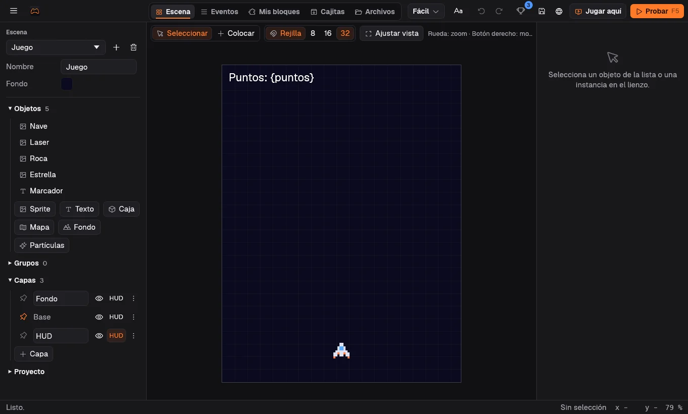
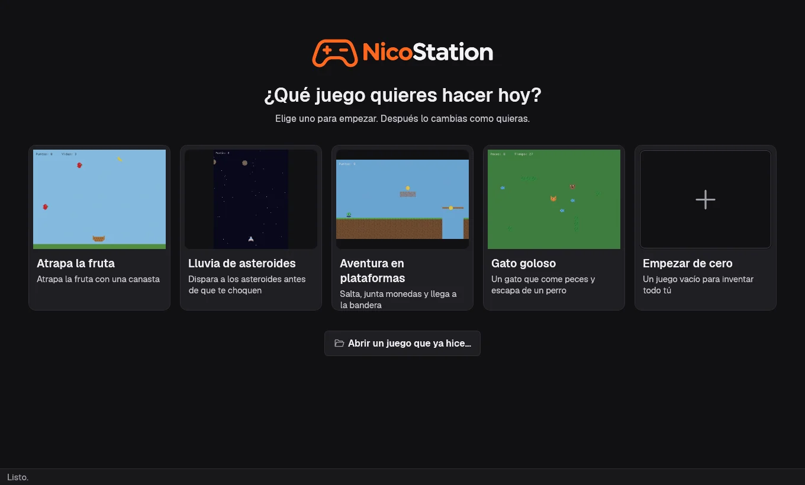
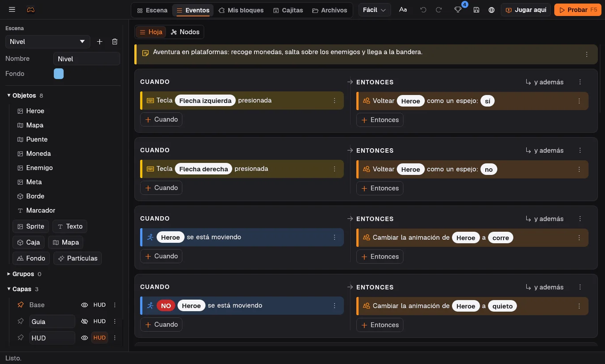
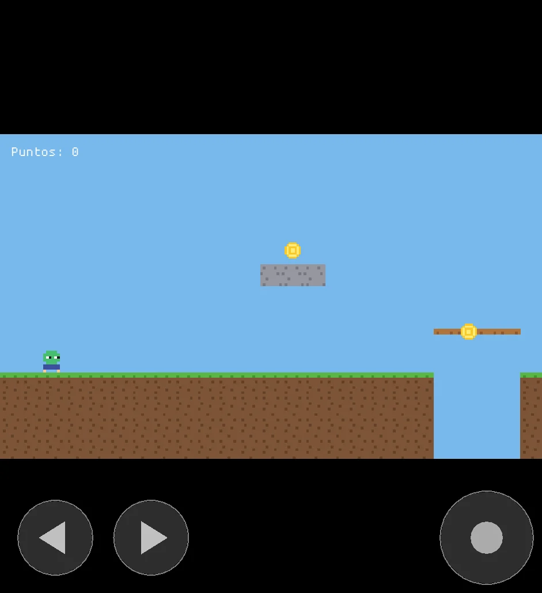
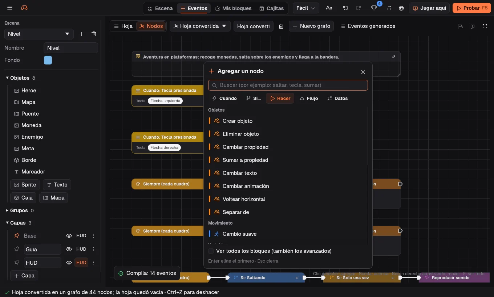

Escenas con capas
Sprites, textos, mapas de baldosas, fondos con paralaje y partículas. Arrastras y listo.
NicoStation es un motor libre que se programa con frases: cuando pasa algo, entonces haz esto. Sin escribir código.

Estas son las plantillas que trae el editor, exportadas a web con un clic. Lo que ves es el mismo motor.
Flechas para moverte, Espacio para saltar
La hoja y los nodos son dos vistas del mismo juego: cambias una y la otra se actualiza sola.


Sprites, textos, mapas de baldosas, fondos con paralaje y partículas. Arrastras y listo.
Plataformas, vista desde arriba, balas, física real con Rapier y caminos con A*.

En el teléfono aparecen solos.
if get_var("vidas") <= 0 {
change_scene("Fin");
}Rhai para la lógica que no cabe en una frase.

Escribe «saltar» o «sumar» y aparece el bloque que buscas.
NicoStation trae un conector MCP. Un agente crea escenas, dibuja pixel art, compone sonidos, escribe los eventos, simula partidas sin ventana y exporta a web.
Cada cambio responde con los problemas que quedan, así el agente corrige solo.
# conectarlo a Claude Code
cargo build --release --bin nicostation-mcp --bin nicostation
claude mcp add --scope user nicostation -- \
$PWD/target/release/nicostation-mcp
# después, en el chat
> Hazme un juego de naves con tres niveles
y un jefe al final.En Linux, compila e instala para tu usuario sin sudo. Aparece «NicoStation» en el lanzador de aplicaciones. Necesitas Rust.
git clone https://github.com/CristoSolar/nicostation
cd nicostation
./instalar.sh